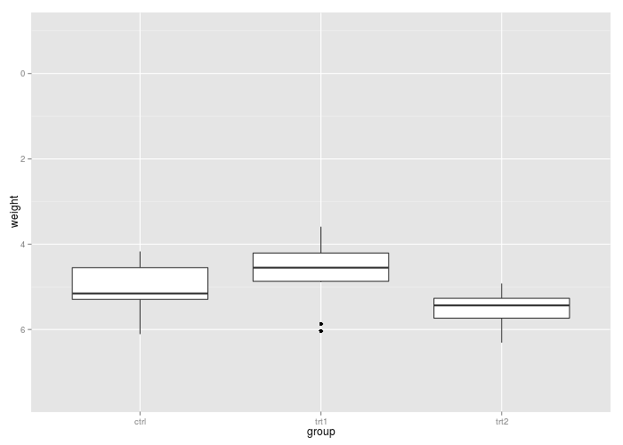
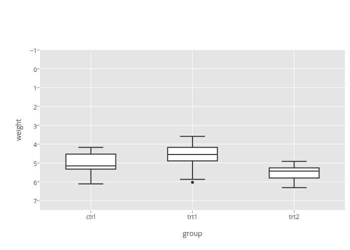

<!-- html table generated in R 3.2.0 by xtable 1.7-4 package -->
<!-- Wed May 20 01:08:53 2015 -->
<table border=1>
  <tr> <td> ggplot2 </td> <td> carson-bar </td> <td> master </td> </tr>
  <tr> <td> <br />  </td> <td> <br />  no-json-file </td> <td> <br />  no-json-file </td> </tr>
   </table>
